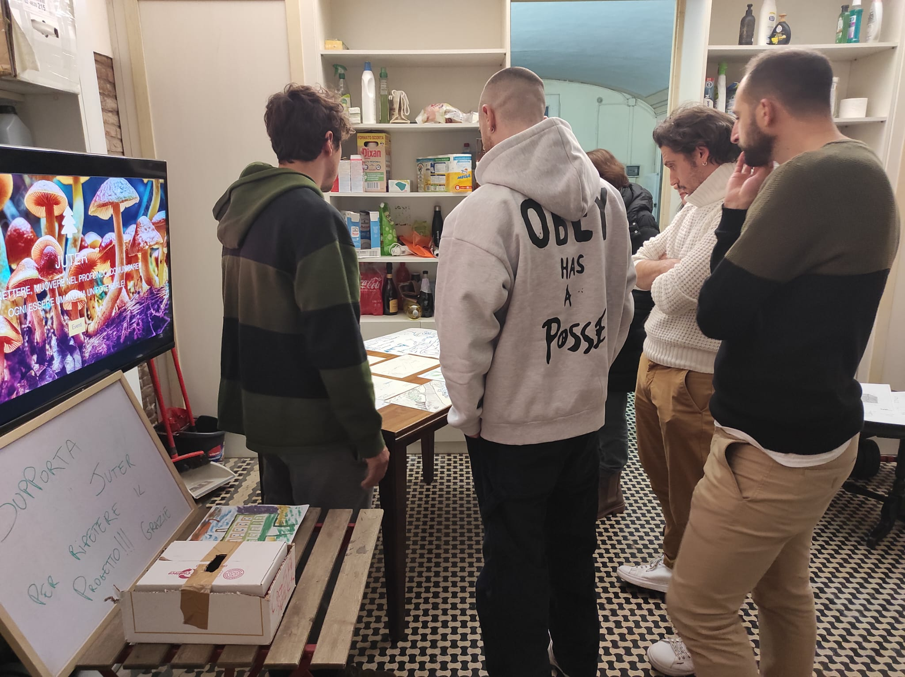

Le iniziative che portiamo avanti sul territorio, anno dopo anno.
Un percorso che cresce di anno in anno, progetto dopo progetto.
Un percorso di natura, emozioni e comunità a Montecenere.

Arte, Emozioni e Consapevolezza in Carcere